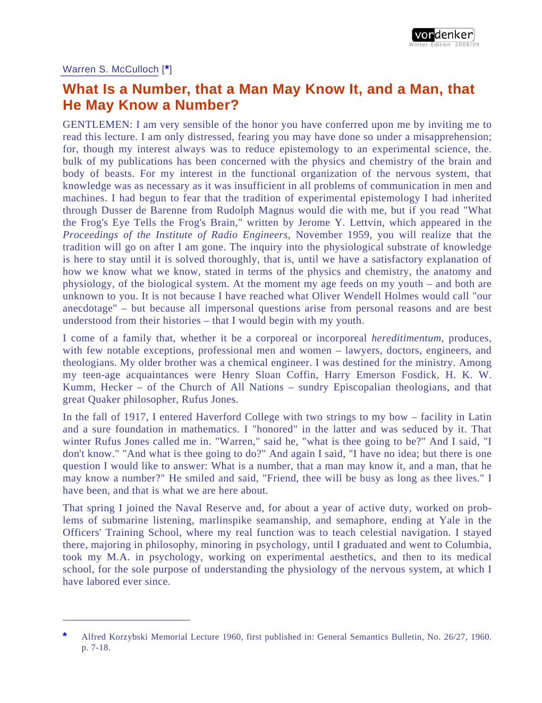
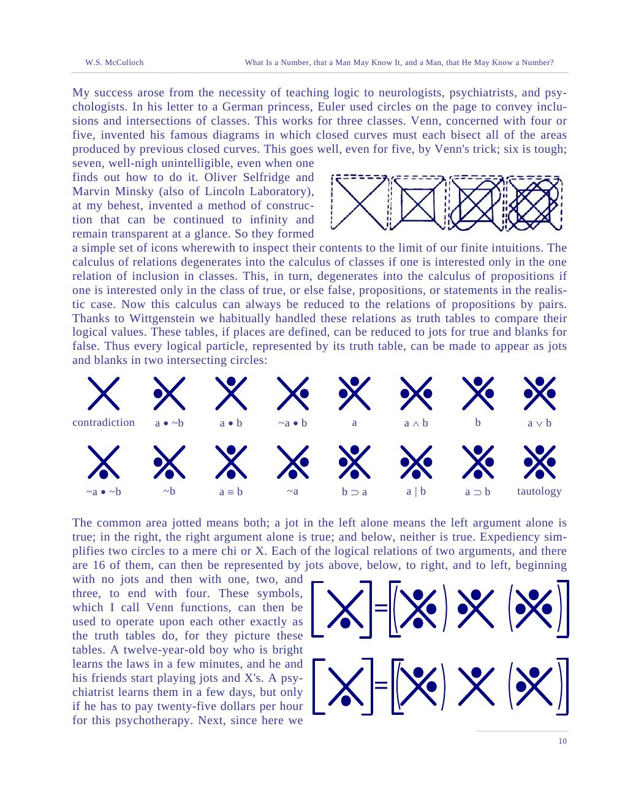
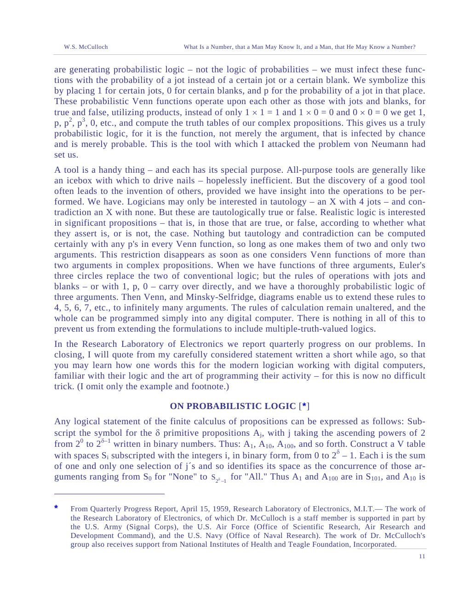

Ninth Alfred Korzybski Memorial Lecture · 1960
What Is a Number, that a Man May Know It?
A number is a class of classes that can be put into one-to-one correspondence. A man is a net of neurons whose least psychic events are all-or-none impulses. McCulloch's lecture is the autobiography of that double answer — and the best short introduction to his whole philosophy.
Read the plateThe thesis
“What is a number, that a man may know it; and a man, that he may know a number?”
The question is McCulloch's lifelong question, asked at Haverford in 1917 and answered, provisionally, in this lecture. The first half is logic: following Hume and Russell, a number is the class of all classes that can be put into one-to-one correspondence with a given class. The second half is neurophysiology: a man knows a number because his nervous system is a net of all-or-none events that can realize the relations of arithmetic.
The lecture is also a tour of McCulloch's intellectual debts — Duns Scotus, Ockham, Hume, Peirce, Russell, Whitehead, Pitts — and a compact statement of the 1943 calculus, the 1947 theory of universals, the 1945 heterarchy, and the probabilistic logic he built with von Neumann's problem in mind.
The lovely claim: “The numbers from 1 through 6 are perceptibles; others, only countables.” Small numbers are shared with beasts; larger ones require the logos of one-to-one correspondence.
Laboratory 01 · one-to-one correspondence
Seven days. Seven pebbles. One number.
A number is not a thing but a relation: the class of all classes that can be matched one-to-one with a given class. Pair the days with the pebbles. When every day has exactly one pebble and every pebble exactly one day, the number is 7.
The Russell–Hume definition, by hand
Click a day, then a pebble. The pairing is the number. A different set with the same pairing has the same number.
pairs0 / 7
number—
The second half
From number to neuron.
In 1929 it dawned on McCulloch that the least psychic event — the “psychon” — might be the all-or-none impulse of a neuron. It either happens or it does not; it implies its temporal antecedent; it proposes something to subsequent psychons; and these can be compounded into more complicated propositions.
With Walter Pitts he made the idea a calculus. The result was the 1943 paper: neurons that can be excited or inhibited, given a proper net, can extract any configuration of signals in its input; and any general Turing machine can be made of them. The psychon became a proposition on the move.
The definition of number. Two classes have the same number when there is a one-to-one correspondence between them. A number is the class of all classes so related.
The least psychic event. Inherently propositional, hence “semiotic”; its relations are those of two-valued logic.
The universal. Any object is an invariant under a group of transformations; the net computes enough group averages to recognise it. This is the bridge from number to idea.
Laboratory 02 · sixteen functions
Every logical particle is a pattern of jots and blanks.
Two arguments, four regions, sixteen Boolean functions. McCulloch's “Venn functions” picture each one as jots (true) and blanks (false) in two intersecting circles. Switch to probabilistic mode and each jot becomes a probability — the logic of a machine whose components misbehave.
The Venn function machine
Choose a function. The four regions show its truth values; the table reads (A,B) from 00 to 11. In probabilistic mode, each argument is true with probability .
functionAND
jots (11,10,01,00)0001
P(function true)0.250
The voice
A life in one question.
“What is a number, that a man may know it, and a man, that he may know a number?”
“A number is the class of all of those classes that can be put into one-to-one correspondence to it.”
“The numbers from 1 through 6 are perceptibles; others, only countables.”
“In 1929 it dawned on me that these events might be regarded as the all-or-none impulses of neurons.”
“We have come far enough to define a number so realistically that a man may know it, and a man so logically that he may know a number.”
The paper itself
Pages from 1960
click to enlarge



Why it matters
The unity of the codex in one lecture.
This is the best single text to read after the technical papers, because it shows how McCulloch himself connected them. Number is a relation of correspondence; a man is a net of all-or-none events; a universal is an invariant under a group; a value can be heterarchical; a logic can be probabilistic. The pieces are not separate projects. They are one experimental epistemology.
And the final answer is carefully modest. We can define a number so that a man may know it, and a man so logically that he may know a number. What we cannot do — yet — is explain insight, the learning of a logical particle from ostension. That is left, as McCulloch says, to the youngsters.
Read next: the recollections, where the teachers and arguments behind this unity are named.